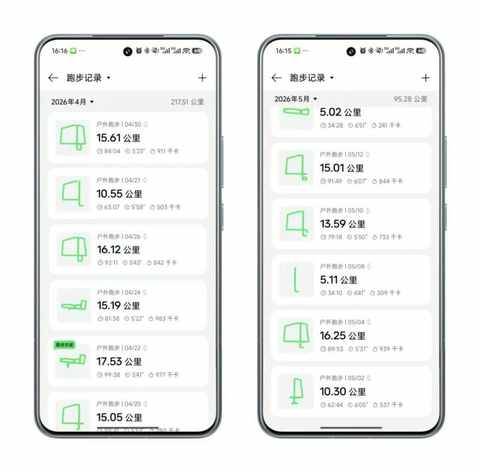
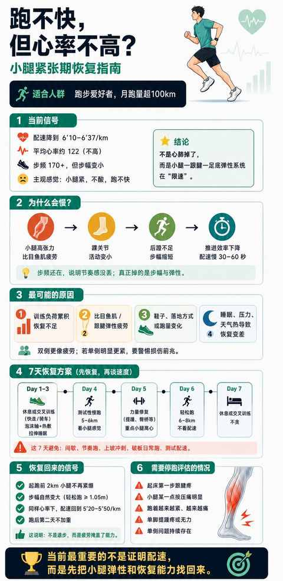
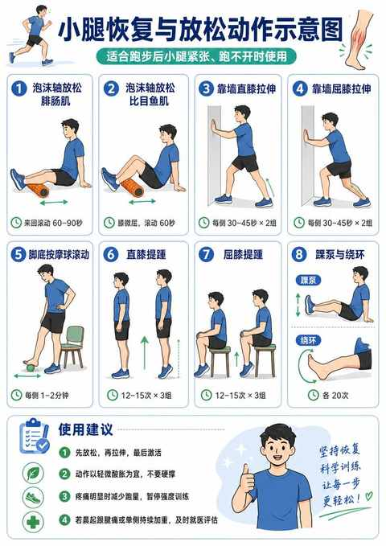
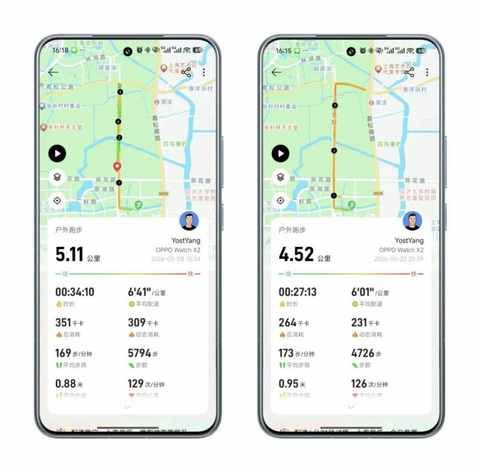

中年人堆跑量的B面：当 ‘疲劳债’ 开始累积，我们该如何 ‘偿还’ 与休整？
引子
从去年9月份开始，基于备赛的考虑，我逐渐把每月跑量从150km左右增加到200km以上，自此过去8个月的跑量已经超过200km。
跑量提升带来的效果是显著的，10月和11月的两场半马比赛都跑进140，12月的首个全马也顺利完成小目标，虽然后半程跑崩，但最终345完赛。
虽然已经过去半年，依然记得刚完赛时的感受，不是声嘶力竭的那种累，是另一种奇特的体验，简单表述是：坐也不是，站也不是。这种疲劳得靠先踱步一段时间来缓解，得给刚刚一直在跑动的身体一些适应的时间。
好啦，堆跑量的A面已经说的七七八八了，跑友们的体会大多比较类似，而堆跑量所带来的B面，可谓是五花八门，跑友们的反馈各有不同。
带来这些不同的反馈的诱因，几乎都指向一个关键词：疲劳债！
警惕疲劳债
毋庸置疑，中年人的恢复能力是远逊于20多岁的小伙子，疲劳便在一次次跑步中累积，进而叠加成疲劳债，尤其是当你开始忽略日常的热身、拉伸、放松的时候。
什么是疲劳债
小学生都知道的道理：出来混，迟早是要还的！
当必要的放松和恢复被忽视，或早或晚都是要还的，你的身体会把信号强烈的传递给你，而且你必须给予回应。
你可能会想，我为何如此清楚，因为从5月初开始，便被累积的疲劳债所困扰，突然配速下降的厉害而且跑不快，同时心率不高。

起初是觉得小腿很紧，和以往一样去做了一次按摩恢复，同时也用泡沫轴来放松大腿和小腿的肌肉。
和去年一样的恢复方式，不同的是这次不奏效，一筹莫展之际突然想起来可以把近期的跑步数据喂给AI并说明具体情况，最终AI给到极其精准的“ 诊断 ”： 局部肌肉耐受性下降时常见的表现。
简单点说：由于小腿的累积疲劳，导致小腿肌肉的耐受性下降，从而导致跑不快的情况。

疲劳债的表现
最显著的表现是：在以往同样的心率下，配速增加1分钟或以上。
与此同时会发现即使有强烈的想提速的欲望，也无法让双腿加速摆动，反而更凸显双腿的沉重，像灌了铅一样。
好在我的策略是偏保守的，不会凭意志力去强行把配速提起来，在查询相关信息后，发现疲劳的时候尤其容易受伤。
在能接受的范围内慢跑是一个相对安全且能维持跑量的方式。
如何缓解 疲劳债
1）最关键是：休息
要抛开对跑量的执念，目前5月份接近尾声，在之前8个月月均跑量超200km的情况下，当下仅完成95km。
这次恢复好，后面每周定期放松，把跑量补回来完全不是问题。
2）最必要是：缓解肌肉疲劳
滚泡沫轴、必要的按摩、筋膜刀等等，选择一个对你而言最有效的方式。

3）最需要的是：耐心
由于个体差异和生活习惯的叠加，每个人从疲劳中恢复的周期有很大差别，此时保持耐心尤为重要，甚至可以说，在这种时期耐心比信心更重要！
下面是时隔两周的跑步数据对比，虽然配速没有回来，但22号晚上跑的体感比8号时候好不少，相信再过2-3周便能回到日常状态，能轻松完成530的配速15km有氧跑。

结语
自从三年前开始跑步，跑步便逐步成为我这个中年男人维持状态和锻炼身体的主要方式。
这次突然无法自如发力同时也需要强制休息，多少有点打乱节奏和个人秩序。这次的小插曲也提醒我，细节不容忽视，随着年龄的增长细节会越来越重要。
毕竟想坚持跑到80岁90岁，最大的前提是不受伤，做好日常的小细节，健健康康的跑下去……